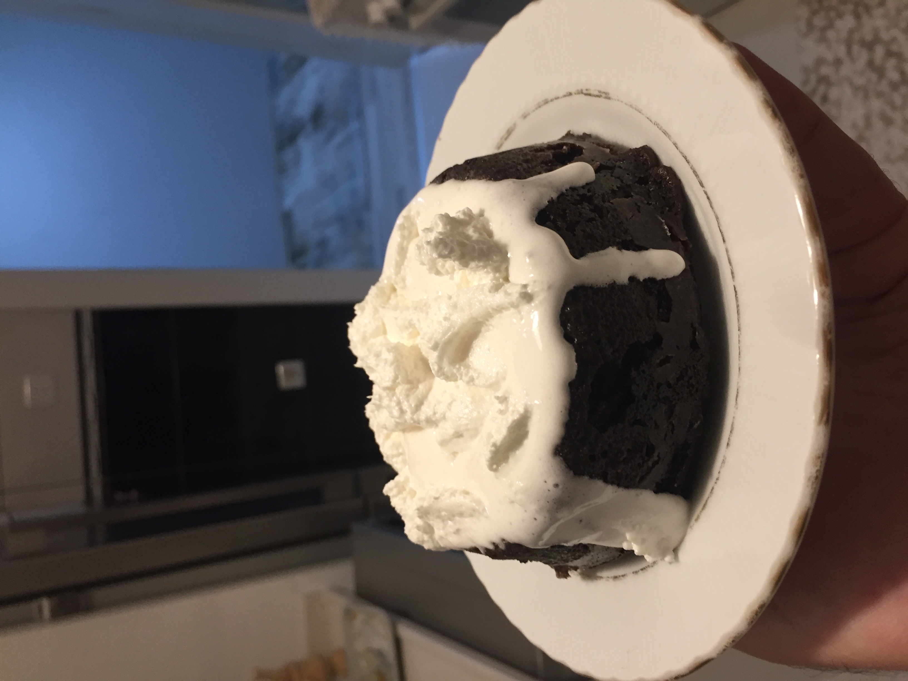
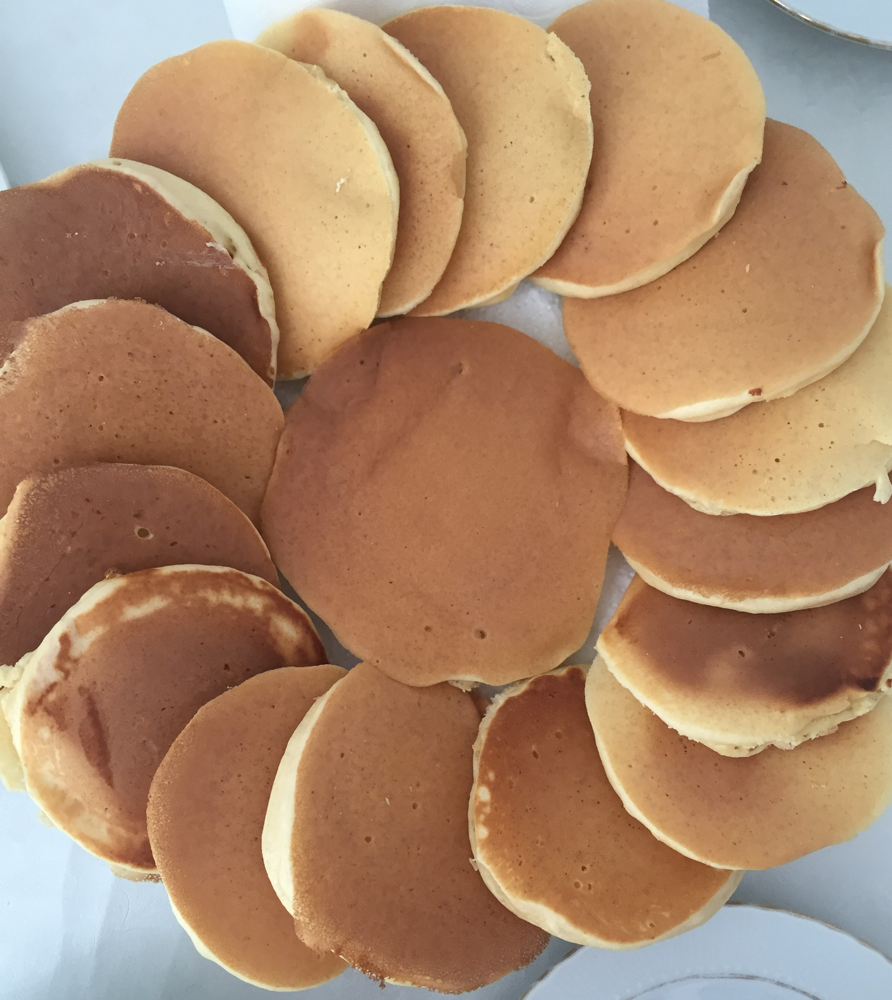
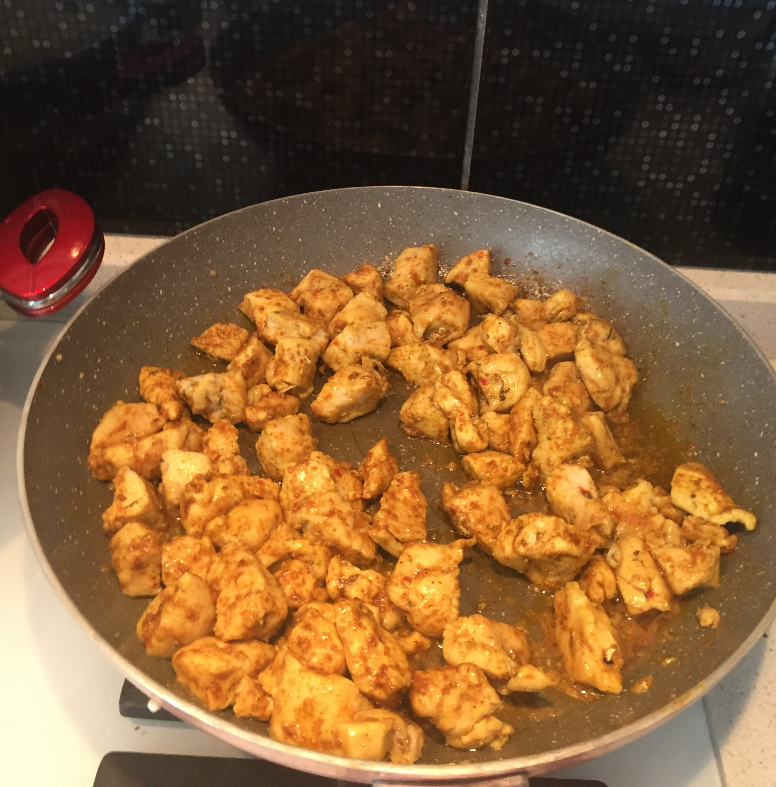
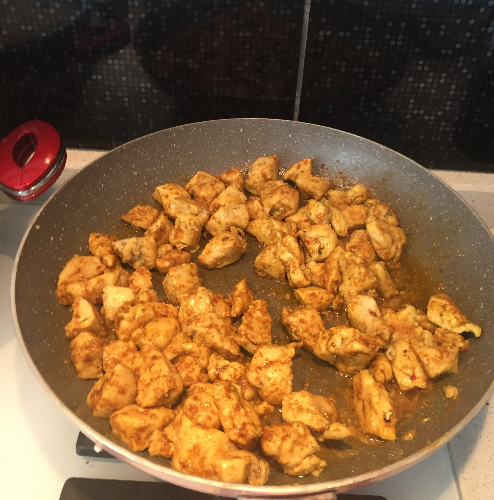
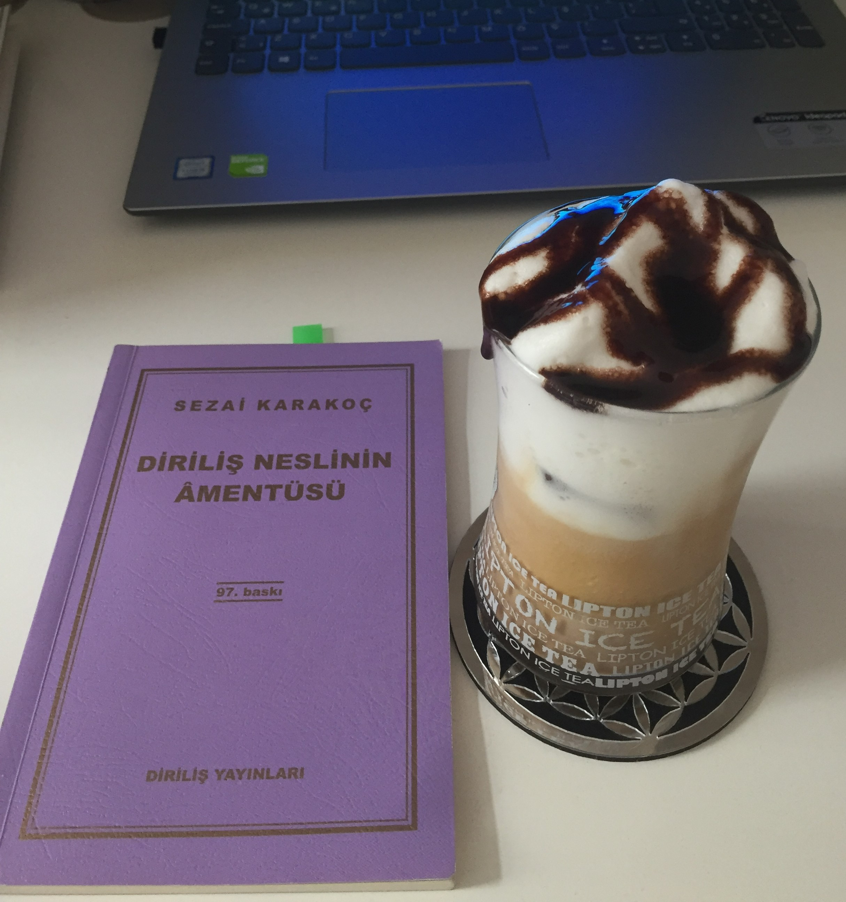
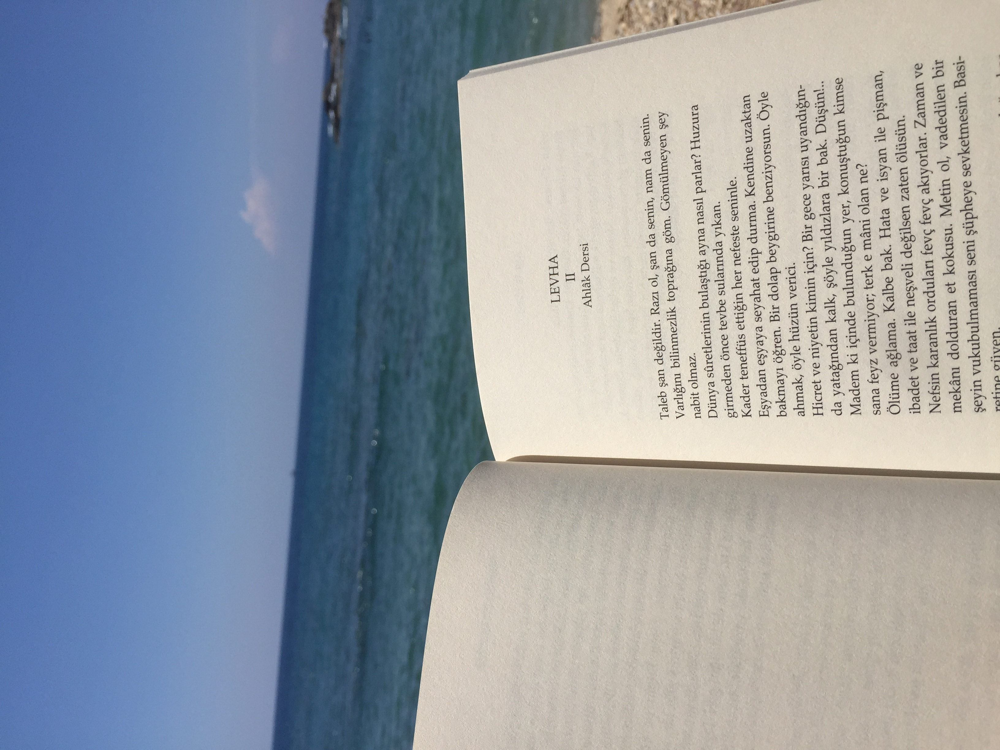
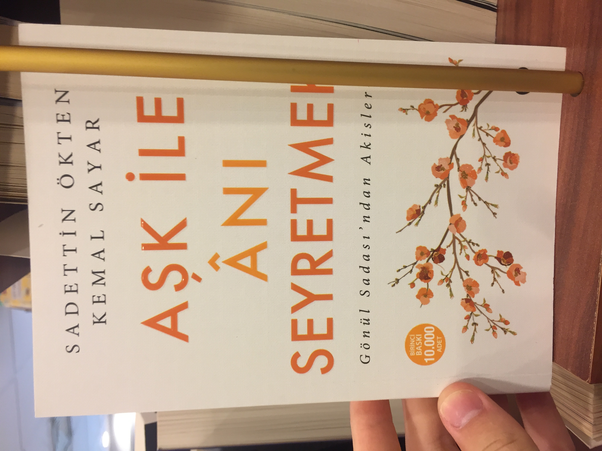

Hakkımda
Merhaba bu sitede sizlere Mustafa Kemal ATATÜRK'ün "Hiç şüphesiz ki dünyanın en güzel yeridir" dediği şehrimiz Antalyayı tanıtacağım. Bu kısımda ise biraz kendimden bahsedeceğim.
Ben Gökdeniz Demir. Sakarya Üniversitesinde Bilgisayar Mühendisliği bölümü öğrencisiyim. Vakit değerlendirmek için seçtiğim şeylerin başında kitap okumak gelmektedir. Kitap okumak her insan için bir olmazsa olmaz, farklı dünyalara gidebilmek için bir bilettir. Bunun dışında yürüyüş yapmaya ve arkdaşlarımla vakit geçirmeye de bayılırım. Hatta bazen bu iki aktiviteyi aynı anda yaparım -ki bu daha keyifli olur-. Bunlarla beraber spor yapmayı da çok severim. En sevdiğim spor voleyboldur. Özellikle arkadaşlarımla kampüste voleybol oynamak çok keyifli oluyor.
Tatlı ve aperatifler hazırlamayı çok severim


 

Kitap okumak da en sevdiğim aktivitelerdendir




Aynı şekilde sosyal medyada gezmek çokça yaptığım bir aktivitedir. Buradan İnstagram adresime, buradan ise Twitter adresime gidebilirsiniz.
Şarkı dinlemeyi çok severim. Sizin de seveceğinizi düşündüğüm bir şarkıyı da buraya bırakıyorum :)